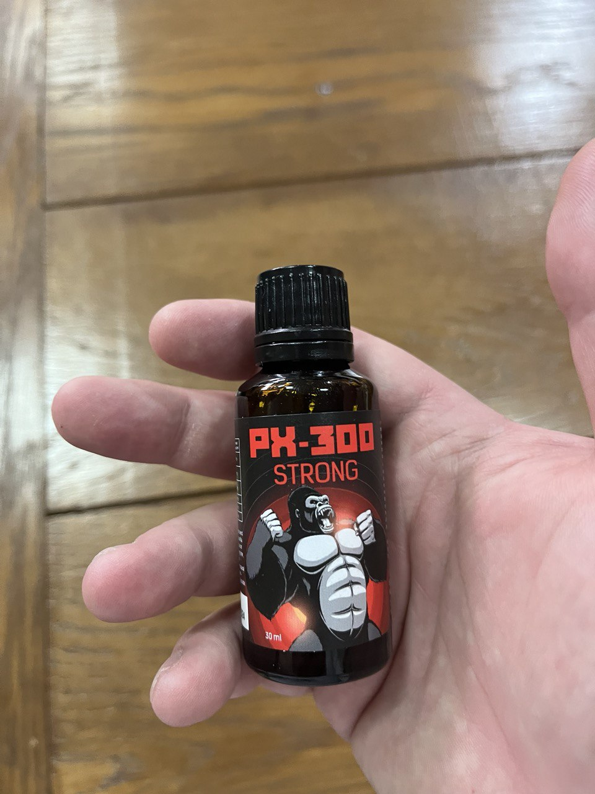
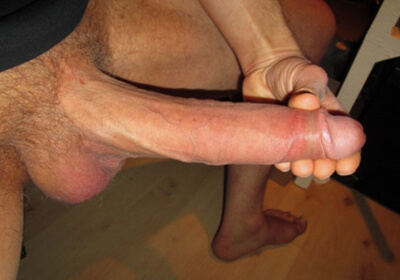

PX-300 M-A SALVAT DE LA DIVORȚ
Chiar și după mulți ani de căsnicie, poți face sex la fel de pasional ca la început. Nu mă credeți? Nici eu nu am crezut înainte să încerc acest remediu. Iar dacă a funcționat pentru mine încă de la început, cu siguranță va fi grozav și pentru voi!

Am o viață absolut normală. Opt ani de căsnicie, trei copii și o mulțime de probleme în dormitor. Da, penisul meu nu este cel mai mare din lume, însă, mai demult, soția nu era nemulțumită. Însă după ultima naștere, distanța dintre picioarele ei a devenit la fel de mare ca distanța până la ziua de salariu. Ca urmare, niciunul dintre noi nu se putea termina decent.
De la stres și lipsa activității fizice, ne certam mereu. Apoi am încetat să mai dorm în același pat cu soția, pentru a evita să ne mai supărăm unul pe celălalt. Însă eram adesea excitat. La început, filmele porno m-au ajutat, dar m-am plictisit rapid. Mă înțelegeți, a te masturba în spatele unui ecran și a i-o trage unei femei sunt două lucruri total diferite. Am încercat să-mi stârnesc soția, am mers de câteva ori la bar și am ajuns în pat cu fete drăguțe, dar nu am mers niciodată mai departe de o singură noapte. Divorț? Nu era o opțiune. Totuși, am trei copii. Aceasta e viața mea. Soția mea este mamă, are grijă de casă și face asta foarte bine. În plus, sunt obișnuit cu ea.

Odată, urmărind porno noaptea, am văzut reclama la remediul pentru mărirea penisului PX-300 . M-am gândit „De ce nu? Oricum, nu am nimic de pierdut!” Așa că am comandat.

Am primit pachetul, am finalizat o cură de 30 de zile și asta a fost tot! Într-o lună, penisul meu a crescut cu 5 cm și a devenit tare ca piatra - nu l-am mai avut niciodată așa. Mi se pare că soția e la fel de strâmtă jos ca înainte de naștere. E foarte fericită acum! Nu ne mai certăm. Și mă simt ca un bărbat adevărat.
În postarea mea anterioară, am publicat poze „înainte și după”. Un agent de vânzări m-a contactat și mi-a oferit o reducere de 50% la următoarea comandă - pentru reclama bună. Și dacă achiziționezi PX-300 prin intermediul acestui link, vei primi o reducere de 50% chiar acum Comandă înainte să fie prea târziu!


Comentarii
20
Frate, înțeleg, și eu trec prin același rahat în viață: Sunt cu soția mea de opt ani și avem doi copii, dar în pat nu mai e nimic încântător. Ar trebui să încercați și voi această cremă.
Cu un penis mare, toate găurile se simt strâmte și plăcute! Chiar dacă amanta ta are peste 60 de ani
Cu un cocoș mic, te chinui chiar și cu o virgină. Nu contează cât de strâmtă e, tot e prea mult loc pentru micul tău tovarăș, e ca un creion care se mișcă într-un pahar. PX-300 schimbă semnificativ situația. Într-o lună, cocoșul meu a câștigat 5 cm. E absolut extraordinar!
Personal, nu înțeleg care e legătura dintre vârsta unei femei și lățimea păsăricii ei?
PX-300 ajută. Uitați-vă! +3 cm
Vă voi spune ceva. Dimensiunea mea înainte era de 17,5 cm. Nici mare, nici mic. Am comandat PX-300 din curiozitate, pentru a-mi îmbunătăți stima de sine. După o săptămână - niciun rezultat. Apoi, lucrurile au început să se schimbe: uneori, erecțiile mele de dimineață erau irezistibile, alteori, chiar în mijlocul unei ședințe, nu-mi puteam opri dorința de a fute. După o lună, l-am măsurat, avea exact 22 cm. Nu glumesc, pot dovedi.
Am comandat, am folosit și aștept. Sper să funcționeze.
Am început să folosesc PX-300 acum trei luni. Îl poți folosi înainte de sex, acesta va mări durata sexuală și erecția. Rezultatele mele: doar +2 cm în lungime, nu foarte mult. Dar aproape dublu în grosime.
Mă întreb dacă această PX-300 poate reduce vaginul femeii?
E simplu. Cu cât e mai gros cocoșul, cu atât pare mai strâmt înăuntru.
Atunci când vine vorba despre mărirea penisului, este exact ce ai nevoie! 3 cm într-o lună, cu ușurință. Ceva de genul.
Așa e! Au trecut două săptămâni de când am început, penisul meu a crescut cu 4 cm! Ce prost am fost, mă pregăteam pentru operație, am avut noroc să aflu despre PX-300 .
Am folosit patru sticle una după alta. Nu am fost singurul impresionat de rezultate. :))) Cel puțin șase fete au fost impresionate la rândul lor.
Pot vedea un efect clar. Cu siguranță e mai tare. Însă în ceea ce privește dimensiunea, doar 2 cm după întreaga cură. Va trebui să repet.
Articolul a fost foarte util. Soția mea tocmai a născut. Căutam un produs pentru a ne menține intimitatea după ce naște.
Am găsit o amantă cu o păsărică tânără și strâmtă și sunt fericit!
Aceeași situație de rahat: Nu vreau să divorțez, dar nevasta are o găleată între picioare și eu am doar 10 cm. Asta nu e viață. Ea își dorește al doilea copil.
în cazul unui penis foarte mic (mi-e rușine să zic cât), credeți că ajută?
Și eu aveam un micropenis. Medicul mi-a recomandat PX-300 . A spus că dacă nu mă ajută, va trebui să-mi fac operație. Din fericire, m-a ajutat, totul e în regulă. Deși nu îmi atârnă până la genunchi, tot pot să le satisfac pe femei.